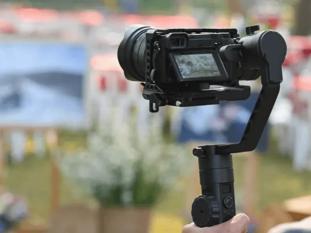
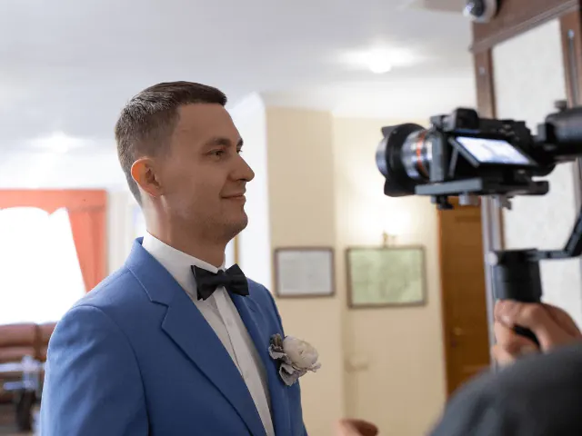

Partnerbijdrage
Om deze redenen willen jullie een videograaf voor de bruiloft
Gepubliceerd op 30 maart 2023, bijgewerkt op 26 mei 2025
Onderdeel van de gids Trouwen in Nijmegen

Op jullie trouwdag zijn er zoveel prachtige momenten die je wilt vastleggen en koesteren voor de rest van je leven. Het aannemen van een professionele videograaf kan ervoor zorgen dat jullie dag wordt vastgelegd op een manier die foto’s niet kunnen evenaren. Hier zijn enkele redenen waarom jullie een videograaf zouden moeten overwegen voor jullie bruiloft:
- Herbeleef de emoties: Foto’s kunnen emoties vastleggen, maar met een trouwvideo kun je de bewegingen, stemmen en sfeer van jullie dag herbeleven alsof je er weer bij bent. Een video kan emoties vastleggen op een manier die foto’s simpelweg niet kunnen.
- De dag vanuit een ander perspectief: Jullie zullen op jullie trouwdag zoveel dingen tegelijk ervaren en het kan lastig zijn om alles mee te krijgen. Een videograaf kan de dag vastleggen vanuit een ander perspectief en laat jullie dingen zien die jullie misschien zelf niet hebben gezien.
- De kans om speeches en geloften terug te horen: Een videograaf kan jullie de kans geven om speeches en geloften terug te horen. Dit zijn mooie momenten die je zeker wilt vastleggen en bewaren voor later.
- Professionele kwaliteit: Het inhuren van een professionele videograaf betekent dat jullie een hoogwaardige video krijgen met een professionele bewerking. Een professionele videograaf weet hoe je de beelden vastlegt en hoe je deze bewerkt tot een mooie video.
- De perfecte aanvulling op foto’s: Hoewel foto’s een belangrijk onderdeel zijn van jullie bruiloft, kan een trouwvideo de perfecte aanvulling zijn. Een video kan de sfeer van de dag vastleggen op een manier die foto’s niet kunnen evenaren.
- Voor altijd koesteren: Een trouwvideo is een waardevolle herinnering die jullie voor altijd kunnen koesteren. Jullie kunnen de video bekijken op jullie trouwdag, maar ook op jullie huwelijksjubileum of wanneer jullie maar willen.
Kortom, een videograaf kan jullie helpen om jullie trouwdag vast te leggen op een manier die foto’s simpelweg niet kunnen evenaren. Het is een investering die jullie voor altijd kunnen koesteren en die ervoor zorgt dat jullie de emoties, speeches en sfeer van de dag keer op keer kunnen herbeleven.
Waar moet je op letten bij het kiezen van een videograaf voor je trouwdag?
Het kiezen van een videograaf voor je huwelijk is een belangrijke beslissing. Je wilt immers dat de belangrijkste momenten van je grote dag op de juiste manier worden vastgelegd. Hieronder vind je een aantal punten waar je op kunt letten bij het selecteren van een videograaf voor je huwelijk:
- Portfolio en stijl
Bekijk het portfolio van de videograaf om een idee te krijgen van zijn of haar stijl. Iedere videograaf heeft een eigen manier van filmen en bewerken. Kijk of de stijl van de videograaf past bij wat jullie voor ogen hebben voor jullie trouwfilm.
- Ervaring
Een ervaren videograaf heeft waarschijnlijk al veel bruiloften gefilmd en weet precies wat er nodig is om een goede trouwfilm te maken. Vraag naar referenties en bekijk eerdere projecten om een idee te krijgen van de ervaring van de videograaf.
- Apparatuur
Vraag de videograaf welke apparatuur hij of zij gebruikt. De kwaliteit van de camera en andere apparatuur is van groot belang voor de kwaliteit van de uiteindelijke trouwfilm.
- Pakketten en prijzen
Vraag naar de verschillende pakketten die de videograaf aanbiedt en de bijbehorende prijzen. Zo krijg je een idee van wat je kunt verwachten en wat het gaat kosten. Let op dat sommige videografen extra kosten rekenen voor bijvoorbeeld reiskosten of extra uren.
- Persoonlijkheid
Een videograaf is de hele dag bij jullie bruiloft aanwezig. Het is daarom belangrijk dat de persoonlijkheid van de videograaf goed bij jullie past. Maak kennis met de videograaf en kijk of het klikt.
- Planning
Beschikbaarheid is een belangrijk aspect bij het kiezen van een videograaf. Zorg ervoor dat de videograaf beschikbaar is op jullie trouwdatum en dat jullie een duidelijke planning hebben voor de dag zelf.
- Contract en afspraken
Zorg ervoor dat je een duidelijk contract hebt waarin alle afspraken tussen jou en de videograaf staan. Leg afspraken over bijvoorbeeld de duur van de film, het aantal uur dat gefilmd wordt en de opleveringstermijn vast.

Welke videografen uit Nijmegen raden wij je aan?
Dominic Verstoep: Dominick Verstoep is een award-winning trouwvideograaf die gelooft dat jullie trouwfilm een waardevol aandenken moet zijn voor de komende generaties. Hij legt jullie dag vast en maakt er een persoonlijke en emotionele film van, zodat jullie de mooiste dag van jullie leven steeds opnieuw kunnen beleven. Dominick werkt onzichtbaar en met aandacht voor jullie en jullie dierbaren, zodat jullie optimaal kunnen genieten.
Jeroen Megens: Het bijzonder aan Jeroen is dat hij jullie kan vastleggen vanuit de lucht. Hij houdt ervan om verhalen te vertellen via video’s en dat komt natuurlijk goed uit als het om een van de mooiste dagen uit je leven gaat. Hij belooft om zich maximaal in te zetten om de gewenste resultaten te behalen.
Bart van Gastel: Bart is een vakkundige videograaf uit Nijmegen die gespecialiseerd is in het vastleggen van evenementen en bruiloften op prachtige video’s. Of het nu gaat om het maken van een bedrijfsfilm of een persoonlijke video, Bart gaat af op zijn gevoel en passie om de meest belangrijke, gevoelige of emotionele momenten vast te leggen op camera. Hij beschikt over de beste apparatuur om te zorgen dat de video geheel aansluit bij jouw wensen.

DE ULTIEME TROUWGIDS VIND JE HIER
BEKIJKFotografen en videografen in Nijmegen
Zin om te beginnen? In onze bedrijvengids vind je alle 58 fotografen in Nijmegen, met openingstijden, kenmerken en een kaart.
Bekijk alle 58 fotografen in Nijmegen
Heb je zelf een fotograaf? Laat je hier uitlichten.